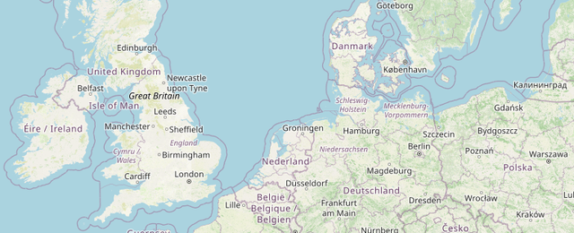

Select Region & Download
Each region offers four files: two time windows (columns) × two parameter sets (rows). Files are GRIB2 format.
Parameters
All params — wind, pressure, precipitation,
temperature, humidity, cloud cover
temperature, humidity, cloud cover
Wind only — U/V wind components at 10 m
Model Area
Full model domain

| All Time | Next Day | |
|---|---|---|
| All Params | ↓ 177 MiB | ↓ 103 MiB |
| Wind Only | ↓ 35 MiB | ↓ 18 MiB |
North Sea
Full North Sea basin

| All Time | Next Day | |
|---|---|---|
| All Params | ↓ 95 MiB | ↓ 58 MiB |
| Wind Only | ↓ 20 MiB | ↓ 10 MiB |
North Sea South
Southern North Sea

| All Time | Next Day | |
|---|---|---|
| All Params | ↓ 32 MiB | ↓ 19 MiB |
| Wind Only | ↓ 6.7 MiB | ↓ 3.4 MiB |
Channel
English Channel

| All Time | Next Day | |
|---|---|---|
| All Params | ↓ 7.2 MiB | ↓ 4.3 MiB |
| Wind Only | ↓ 1.5 MiB | ↓ 799 KiB |
Zealand
Zeeland coastal waters

| All Time | Next Day | |
|---|---|---|
| All Params | ↓ 2.5 MiB | ↓ 1.5 MiB |
| Wind Only | ↓ 555 KiB | ↓ 282 KiB |